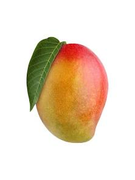
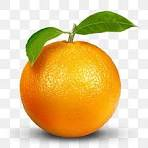
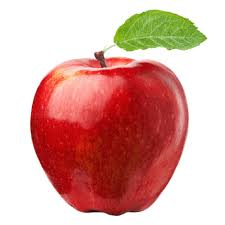
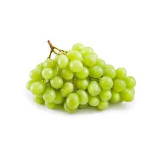

Mango is known as the "King of Fruits". It is sweet, juicy, and rich in vitamins A and C. Mangoes are mainly grown in tropical regions and are very popular in summer. They help improve digestion and boost immunity.
To TOPBanana is a soft and sweet fruit that is rich in potassium and energy. It is easy to digest and is commonly eaten as a snack. Bananas help in maintaining heart health and provide instant energy.
To TOP
Orange is a citrus fruit that is rich in vitamin C. It has a sweet and tangy taste and helps boost the immune system. Oranges are also good for skin health and hydration.
To TOP
Apple is a nutritious fruit often associated with good health. It is rich in fiber and antioxidants. Apples help in digestion and are good for heart health. "An apple a day keeps the doctor away" is a popular saying.
To TOP
Grapes are small, juicy fruits that grow in bunches. They can be green, red, or black. Grapes are rich in vitamins and antioxidants and are used to make juice, jelly, and wine.
To TOP